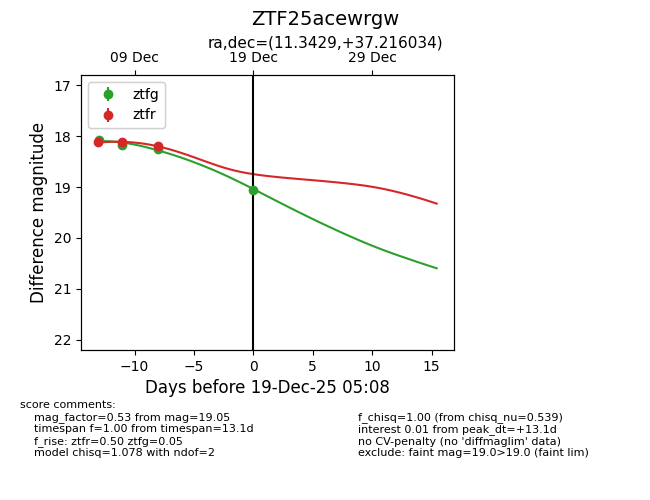
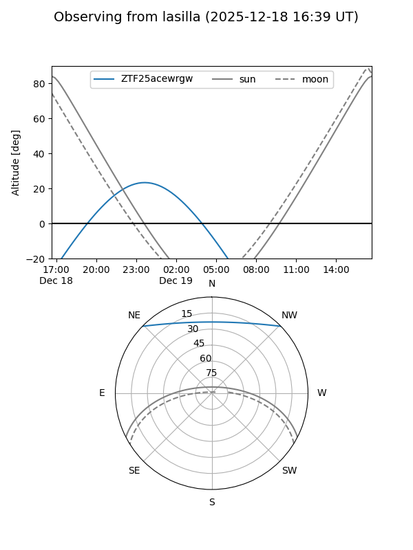
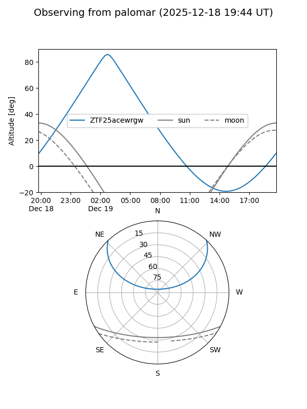
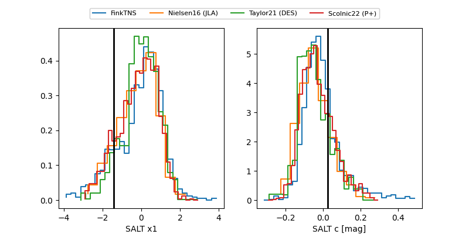

ZTF25acewrgw
Target ZTF25acewrgw at 2025-12-19 05:11
Aliases and brokers:
FINK: fink-portal.org/ZTF25acewrgw
Lasair: lasair-ztf.lsst.ac.uk/objects/ZTF25acewrgw
ALeRCE: alerce.online/object/ZTF25acewrgw
alt names
ZTF25acewrgw (ztf,fink_ztf)
Coordinates:
equatorial (ra, dec) = 11.3429,+37.21603
equatorial (HMS+DMS) = 00:45:22.30,+37:12:57.72
galactic (l, b) = (121.5923,-25.63993)
Flags:
Photometry:
last ztfg=19.05, ztfr=18.20
4 ztfg, 3 ztfr detections
Lightcurve

Visibility


Additional plots
